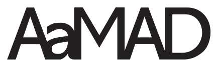

Architect and urban designer, MSc Politecnico di Milano. Projects across scales, from the city and its landscapes to buildings and interiors, with a focus on transforming existing places: industrial sites, military barracks and heritage.
Architectural designer with 7+ years of practice across Italy, Spain, Iran and Canada. I work from concept and competition design through visualization and presentation, with a focus on transforming existing buildings, industrial sites and heritage. I combine 10+ years of Rhino/Grasshopper and Adobe Creative Suite with visualization both classic and AI-assisted.